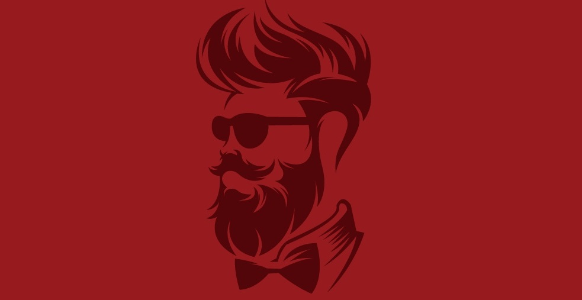
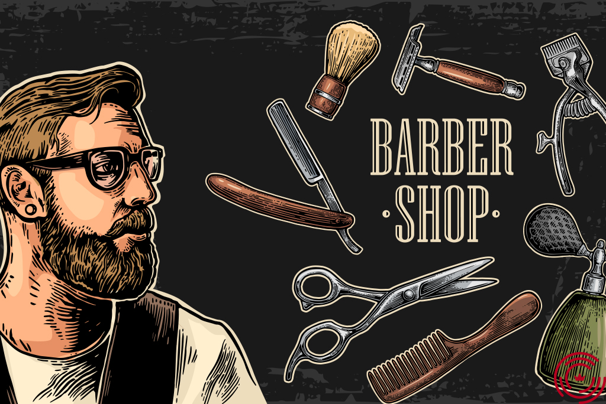
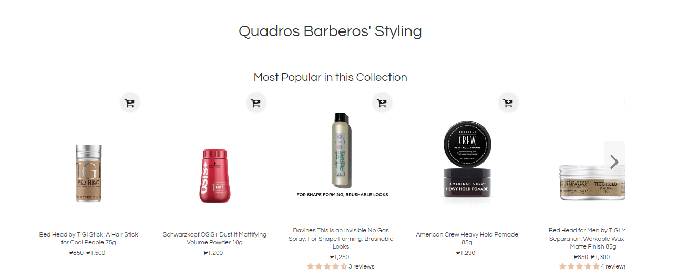
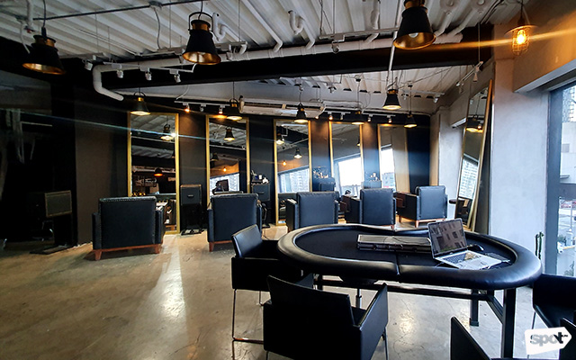

// Now Open
Grand Opening
"(Pasay, Metro Manila, December 02, 2022). Quadros Barberos will be opening its doors for the first time on the 6th Day of December, 2022. The men of public is invited to celebrate the occasion and to experience the best hair services firsthand. The event will start at 8:00 A.M. at SM Mall of Asia - Pasay.
"The grand opening includes special offers and there will be known guests (i.e., artists, actors, players, etc.)."
"We are very excited to open this business and we would like to thank our sponsors for making this possible", Mark Louie Salinas (co-owner of Quadros Barberos) said. "We have our goals of milestones that we are set to achieve so customers should expect us to be at our best in what we do here", he added.
// Barbers and Barbershops
Must-Have Tools For Every Barber
"Being a barber is a profession that never really goes out of need because in every era, people need their hair and facial hair cut and styled well. Nevertheless, it does require proper skill and expertise. To be the complete barber, you have to have a certain set of tools that will complete your services, whether you are an amateur or pro."
// Products
Available Hair-Styling Products
"Men's hair products are an essential part of every modern man’s arsenal. We’re here to help you cut through the noise and figure out exactly which products are going to make your hair look amazing, not to mention what each one will do for your hair."
// Coming Into Fashion
15 Trending Haircuts for Men in 2022
"For men, hair is the crowning glory that should be given equal attention as one’s penchant for cars and watches. If you’re looking to transform your look, there are many haircuts for men that are stylish and cool. As some of the most popular cuts, these trending men’s hairstyles can be paired with different lengths and textures to create the perfect style. Whether you want short or long hair, these new haircut styles will take your look to the next level. To inspire you with ideas, we’ve put together a list of the best haircuts for men."
// Prominent Ranking
Top 10 Barbershops in Manila
"(SPOT.ph) If you're one of those guys who feel like getting a haircut is a chore, don't worry—we totally get you. What if we told you that a trip to the barber doesn't always have to be a drag? Getting the haircut you actually want is entirely possible and whether you want something that's quick and reliable, or prefer a full-blown pampering session you didn't know you needed, there are a number of barbershops in the city that can give you that and more. Below, we ranked the 10 best barbershops in the Metro based on ambience, quality of service, and value for money."
CONTACT QUADROS
G/F, Main Mall, Seaside Blvd, 123, Pasay, 1300 Metro Manila
+63 911 666 3629
quadrosbarberos@ccmail.uk
OPEN 7 DAYS A WEEK!
Monday - Friday : 10AM - 6PM
Saturday - Sunday: 10AM - 5PM